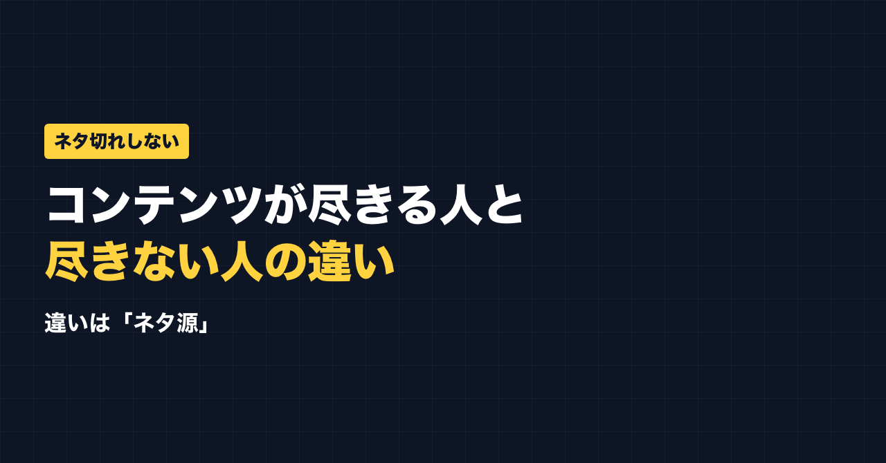

1. タイトルをコピーして、note のタイトル欄に貼る
2. 「本文1をコピー」から順にコピーし、note の本文に貼る
3. 青いラベルの位置に、images フォルダの同じ名前の画像を入れる（本文には貼られません）
※ 見出しが普通の文字になった場合は、その行を選んで「大見出し」を設定してください

「発信を始めたはいいけど、すぐネタが尽きる」
発信を続けるうえで、多くの人がぶつかる壁です。でも、ネタが尽きにくい人もいます。その差は才能ではなく、ネタを探す場所にあると思います。
ネタが尽きる人の探し方
ネタが尽きる人は、たいてい頭の中だけで考えています。
「何か発信することないかな…」と、机の前でうんうん唸る。でも、頭の中の在庫には限りがあります。だから、数日で「もう書くことがない」となる。
井戸の水を汲み続けているようなもので、いつか枯れます。
ネタが尽きにくい人の探し方
一方、ネタが尽きにくい人は、外から拾っています。ネタ源は主に4つです。
① 自分の経験
過去の失敗、乗り越えたこと、日々の仕事の工夫。思っている以上に在庫があります。
② 読者の質問・悩み
コメントやDMで聞かれたこと、検索されているキーワード。「聞かれた＝知りたい人がいる」ネタです。
③ 日々の気づき
今日学んだこと、感じた違和感、ニュースへの意見。毎日何かしら起きています。
④ 1テーマの切り口変え
同じテーマでも、失敗談・手順・誤解・比較…と切り口を変えれば、何本にもなります。
この4つを回していれば、ネタは「ひねり出す」ものではなく「拾う」ものになっていきます。
ネタ帳を持つ
おすすめは、ネタ帳を1つ持つこと。スマホのメモで十分です。日常で「あ、これ発信できるかも」と思った瞬間に、一言だけメモする。
投稿するときは、そのメモから選ぶだけ。ゼロから考えなくて済みます。
凝った文章にしなくても大丈夫です。私の場合、AIで整えた文章より、ボソッとつぶやいた一言のほうが反応があります。だから、メモした一言をほぼそのまま投稿にしてもいいくらいです。
一度「棚卸し」すると、在庫が見える
いちばん大きなネタ源は、やはり自分自身の経験です。ただ、多くの人はそれが自分では見えていません。一度しっかり棚卸しして、「自分にはこれだけ話せることがある」と書き出してみると、ネタ切れの不安はかなり小さくなります。
公式LINEでは、発信や副業に使えるプロンプトを配っています。「特典」と送ると、LINE限定のプロンプト5本が届きます。
https://lin.ee/RzyA13P
自分の強みを整理して、SNSの投稿の下書きまで作れるツール「副業ドラフト」も作っています。Threads の下書き3本までは無料で試せます。
https://note-threadssf.onrender.com